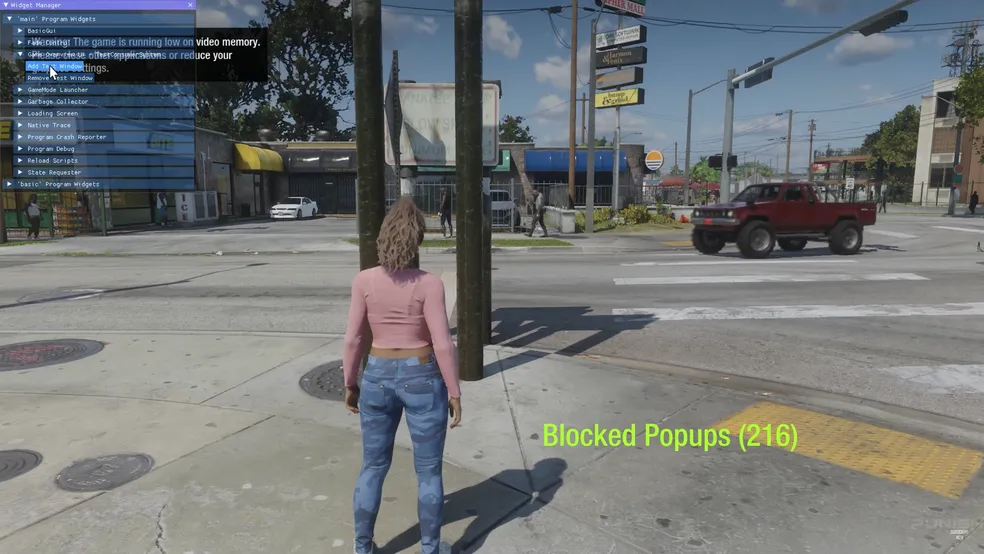

Rockstar confirma vazamento de GTA 6: 'estamos desapontados'
19/09/2022
A Rockstar confirmou, nesta segunda-feira (19), que de fato teve suas redes invadidas e que o material do próximo Grand Theft Auto vazado é legítimo. Em um comunicado, a desenvolvedora afirmou que não deverá interromper o desenvolvimento e que manterá o calendário já previsto....
Sonic Frontiers filmes tem duração longa e lembra
11/09/2022
Frontiers causou reações mundiais erradas pelo público na primeira estreia que demonstrou a jogabilidade do jogo . Os críticos afirmaram que a ambientação lembrava algo desolado. Sendo cinco ilhas no total, cada uma das Ilhas Starfallbiomas com cenários distintos, nos quais os jogadores atravessam em alta velocidade cachoeiras, bosques e desertos inseridos nas dunas. A primeira ilha é gramada e arborizada. Já a segunda é ambientada num deserto arenoso. As tarefas a serem cumpridas para que se avance no jogo vão desde quebrar-cabeças até cumprir desafios de plataforma, além de embater com inimigos graças às novas habilidades de batalha do Sonic. Diferente da maioria dos jogos anteriores, o combate um capricho maior, visto que os inimigos são mais hábeis e estão dispersos nestas ilhas com espaços mais abertos. O Sonic pode defender e se esquivar dos ataques inimigos.
Pokémon Scarlet Preview – Tudo o que aprendemos sobre a região de Palde Pokémon
15/09/2022
Essas bestas lendárias não são os únicos Pokémon em Paldea que podem mudar de forma, no entanto. Tal como acontece com as mais recentes, a IX apresenta um novo todas as gerações que podem acontecer a forma como os Pokémon podem acontecer novos com em batalha. Assim como Dynamax e Mega Evoluções de gerações passadas, os Pokémon na região de Paldea podem Terastallizar, com que brilham como gemas e se tornam mais poderosos. Alguns pokémons podem mudar de tipo quando se transformam em Terastalização. Estes podem variar mesmo dentro da mesma espécie de Pokémon. Por exemplo, um Eevee pode permanecer do tipo Normal quando Terastaliza, enquanto outro pode ter um tipo Tera diferente